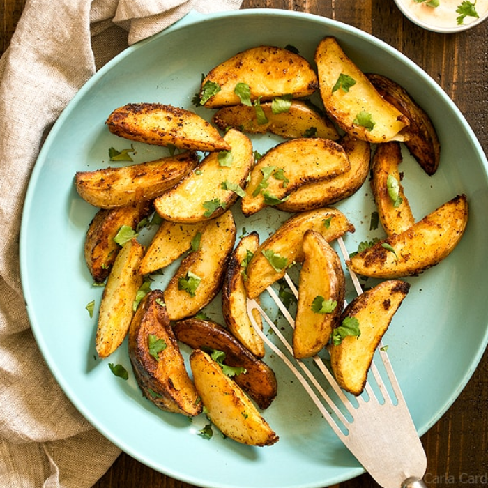

The Tomi Recipes

Fried Potato Wedges
Spicy thin-sliced potato wedges fried to perfection.
Prep: 10 mins
Cook: 10 mins
Yield: 5 servings
Ingredients
Directions
Notes
1.
Heat oil in a deep-fryer or large saucepan to 190 Celcius degrees
2.
Slice potatoes into 16 wedges.
3.
Combine flour, chili powder, chicken bouillon, paprika, black pepper, and cayenne in a 1-gallon resealable plastic bag.
4.
Dip potato wedges in milk, then shake them in the flour mixture. Fry in the hot oil until golden brown, 5 to 6 minutes per batch. Let drain on paper towels.